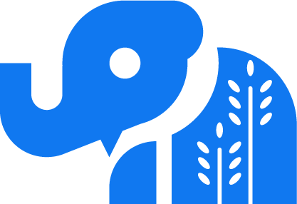

 Prairie Postgres
News
2025-03-26: PGDay Chicago community sponsorship
Prairie Postgres is proud to be a community sponsor of PGDay Chicago! See you on Friday April 25 at 540 W Madison!
2025-03-14: PGDay Chicago student discounts
We have a limited number of 50% discount codes for PGDay Chicago on Friday April 25, available exclusively to attendees of Student PG DATA Day on Thursday the 24th at the same location, 540 W Madison. We'll be giving these out to attendees who expressed interest in attending PGDay Chicago on registration. If you didn't tick that radiobutton, you can still email us at contact@prairiepostgres.org to get on the waiting list.
See you on April 24th!
2025-03-10: Thank you xata.io!
Many thanks to xata for supporting our educational work!
2025-02-28: Student PG DATA Day schedule
Student PG DATA Day will take place on Thursday, April 24, at 540 W. Madison in Chicago. Attendance is free, but registration is required. Please fill out the registration form!
| Time | Session | Session |
|---|---|---|
| 8:00 am | Breakfast and check-in | |
| 8:30 am | DBA in a Box - Shaun Thomas | Introduction to DB Design and Optimization - Lætitia Avrot |
| 12:00 pm | Lunch break | Mock interviews |
| 1:00 pm | Introduction to DB Design and Optimization - Lætitia Avrot | DBA in a Box - Shaun Thomas |
| 4:30 pm | Closing | |
2025-02-12: DevOpsDays Chicago sponsorship
Prairie Postgres NFP is proud to be a community sponsor for DevOpsDays Chicago 2025, coming March 18!
2025-02-06: Student PG DATA Day announced!
Prairie Postgres is happy to announce Student PG DATA Day on April 24, 2025, one day before PG Day Chicago. This will be a day of training, mock interviews, and networking for learners interested in using PostgreSQL in new professional contexts.
The detailed program will be announced by February 28, and registration will be open on the same day. To stay informed, please sign up using this Google Form.
About
Prairie Postgres NFP is a 501(c)(3) nonprofit organization chartered in Illinois, the Prairie State, and serving the Midwestern United States.
We host events and offer training, professional development, and networking opportunities for technical practitioners and researchers. We seek to foster diversity, equity, and inclusion through our work in the local technical community.
Code of Conduct
Prairie Postgres has adopted the PostgreSQL Code of Conduct.
Contact and Donate
- Contact us
- contact@prairiepostgres.org
- Zelle
-
Via the app to treasurer@prairiepostgres.org, or scan the QR code with your bank app: